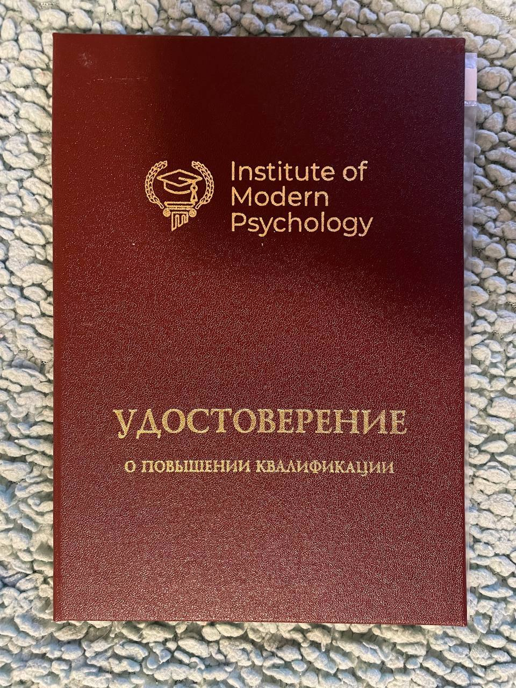
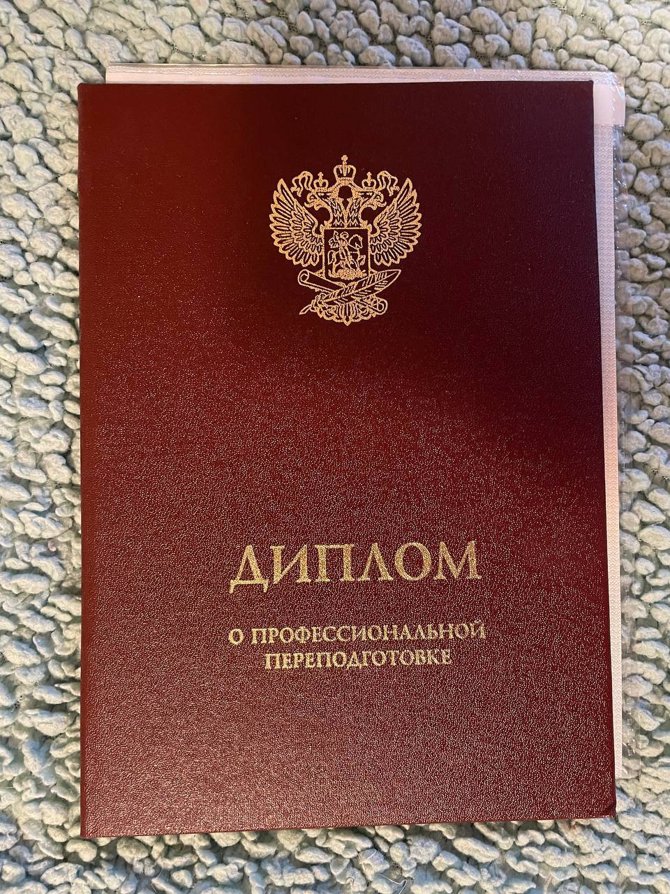
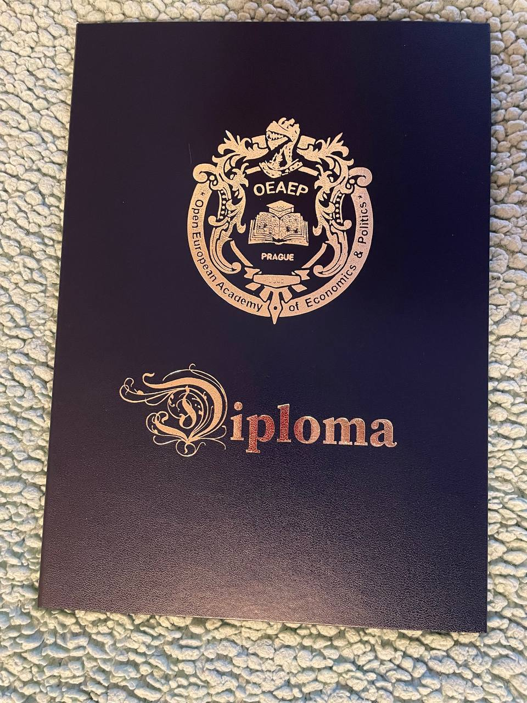
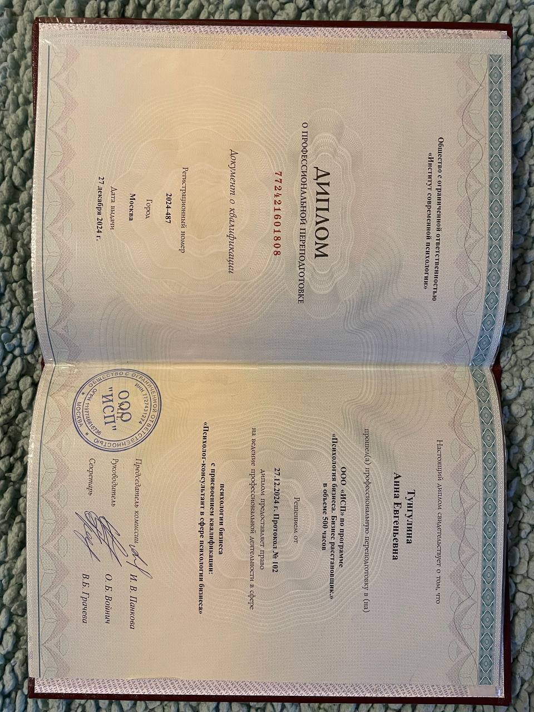
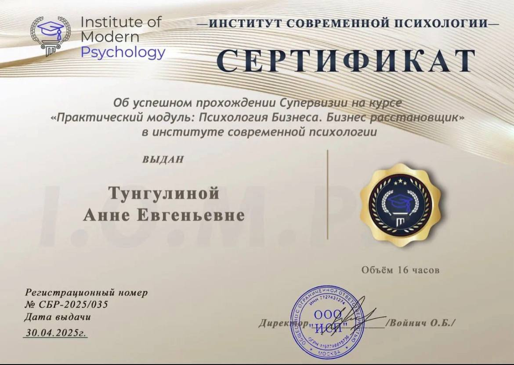
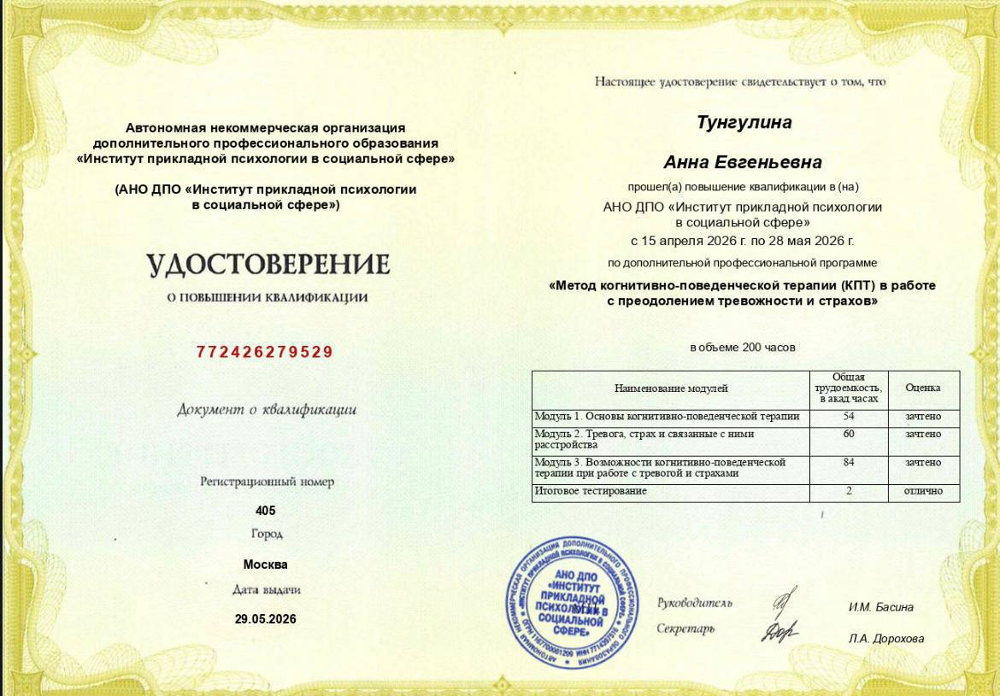

КПТ и Коучинг
Работа с мышлением
Когнитивно-поведенческая терапия помогает увидеть и изменить установки, которые держат в тревоге и самокритике, а коучинг — построить путь к цели.
Вы можете многое понимать головой, но жизнь всё равно продолжает повторять одни и те же сценарии.
Вместе мы найдём настоящую причину происходящего, а не будем бесконечно бороться только с последствиями.
Когда меняется внутреннее состояние — начинает меняться и сама жизнь.
Я работаю с людьми, которые устали жить через тревогу, напряжение, контроль и постоянную борьбу с собой.
Для меня важно не просто помочь понять, почему проблема возникла. Намного важнее помочь изменить внутреннюю систему, чтобы прежние сценарии перестали повторяться сами собой.
Именно поэтому мои клиенты замечают, что начинают иначе чувствовать, иначе выбирать, иначе строить отношения, иначе принимать решения и иначе проживать свою жизнь.









Я не ограничиваюсь одной школой психологии. В работе соединяю проверенные научные методы с духовными практиками — так терапия затрагивает и ум, и тело, и душу.
Когнитивно-поведенческая терапия помогает увидеть и изменить установки, которые держат в тревоге и самокритике, а коучинг — построить путь к цели.
Помогают увидеть скрытые связи и причины, которые влияют на отношения, деньги, бизнес и важные решения. Показывают, где система даёт сбой и что мешает двигаться дальше.
Работа с внутренним ребёнком, тенью, Родом и глубинными смыслами — там, где ум уже не даёт ответов.
Древняя духовная практика-путешествие, помогающая увидеть путь души и то, что мешает проявленности.
Помогают быстрее восстанавливаться, давая дополнительные источники энергии. Когда сил становится больше, внутренние изменения проходят легче и быстрее.
Онлайн из любой точки мира. Без осуждения и давления. В вашем индивидуальном темпе. Я рядом и помогаю пройти путь к желаемому результату.
Эти запросы приходят чаще всего — но за каждым стоит своя, уникальная история.
Снижаем фоновое напряжение и убираем корень тревоги. Когда внутри становится спокойно, жизнь перестаёт быть постоянной борьбой, а мозг начинает видеть варианты решения, которые раньше не замечал.
Повторяющиеся сценарии в отношениях — не случайность. Мы работаем с их глубинными причинами, чтобы вы перестали страдать, научились выбирать себя и строить здоровую, счастливую жизнь.
Страх проявляться, сомнения и откладывание часто рождаются из внутренних ограничений. Освобождая их, вы перестаёте бороться с собой и начинаете уверенно двигаться к своим целям.
Работаем с родовыми и личными установками, а также с другими внутренними ограничениями, которые блокируют поток, достаток и мешают сохранять и приумножать капитал. Убирая их, вы начинаете легче замечать возможности, принимать решения и увеличивать свой доход.
Выберите, с чего начать
От знакомства в записи до полного сопровождения на пути изменений.Терапия — это не стать другим, а перестать быть тем, кем пришлось стать.
Поможет выйти из болезненного сценария отношений, начать укреплять внутреннюю опору и строить счастливую семейную жизнь.
Полноценная встреча 90 минут — глубокая проработка конкретного запроса в удобном для вас темпе.
Системная работа с темой тревожности, отношений или денег. Оптимально для устойчивого результата.
Помогает увидеть скрытые причины проблем в бизнесе, принять продуктивные решения и найти новые точки роста.
Продолжительность — 3,5 часа. Группа 2–3 человека.
От одного месяца. Работа за пределами классической психологии. Формат обсуждается индивидуально.
5 шагов к первой сессии
Простой и понятный путь — без лишней бюрократии.Пишете мне в Telegram.
Коротко обсуждаем запрос и подбираем подходящий формат.
Оплачиваете удобным способом. Бронируем дату и время встречи.
Встречаемся онлайн по видеосвязи в назначенное время.
Даю практики между встречами, поддерживаю вас на пути изменений.
Что говорят клиенты
Реальный опыт людей, которые прошли терапию.«Впервые встретила специалиста, который не боится соединять психологию и духовные практики. После расстановки многое встало на свои места.»
«Пришла с тревожностью, которая мешала жить и работать. В конце сессии я сидела и пыталась понять, то сейчас произошло? Я сначала ничего не поняла. А потом как поняла!)) Поразительно! Час назад меня это тревожило, а сейчас абсолютно нет, как так?!»
«Игра Лила стала открытием — увидела свои блоки с деньгами совсем с другой стороны. Очень тонкая и внимательная работа, без давления.»
Частые вопросы
Все консультации проходят онлайн по видеосвязи (Zoom, WhatsApp или Telegram — как удобнее вам). Это не снижает глубину и эффективность работы.
Это нормально. На первой сессии мы вместе разберёмся с запросом, определим план работы и начнём путь к желаемому.
Многие мои клиенты отмечают, что ощущают облегчение уже после первой встречи.
Всё зависит от вашего запроса.
С точечными темами часто удаётся разобраться за 1–3 сессии.
Для более глубоких запросов обычно требуется от 5 сессий.
Да. Это отличный способ познакомиться с моим подходом самостоятельно и в своём темпе, а затем, при желании, перейти к индивидуальной работе.
Напишите мне в Telegram. Мы согласуем дату и время встречи, после чего я пришлю удобные реквизиты для оплаты.
Терапия — это совместный процесс.
Я не обещаю «волшебную таблетку» или мгновенные изменения.
Но гарантирую профессиональную работу, честность и полную включённость в ваш запрос.
Мы будем двигаться к реальным изменениям, а не просто бесконечно обсуждать проблему.
Если вы чувствуете, что готовы начать путь к себе — я буду рядом.
Обсудить запрос